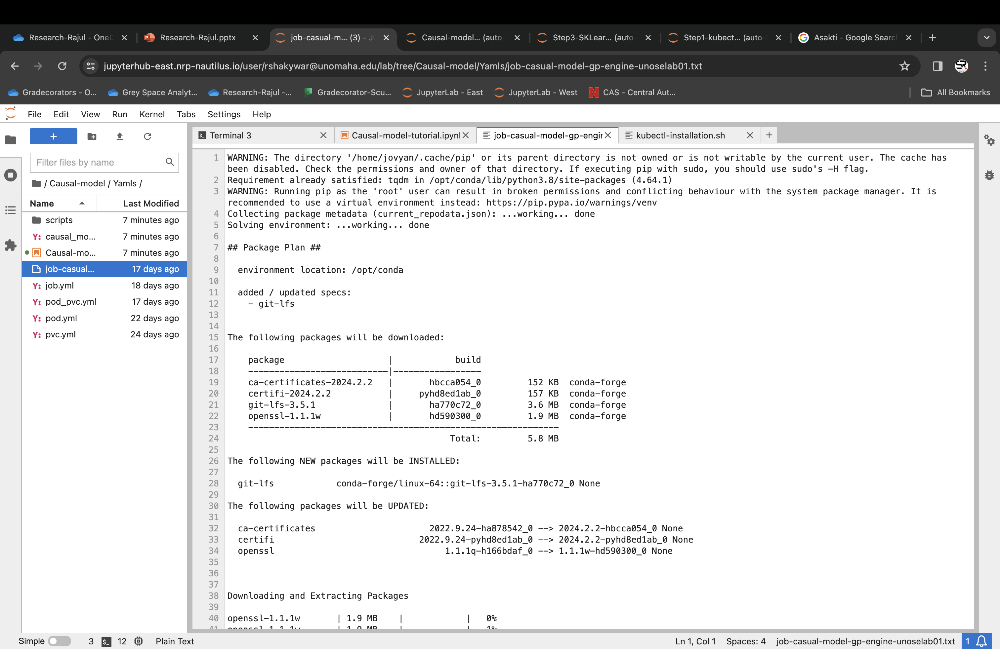

This notebook will walk through step by step to run causal-model python script as a kubernetes job
Add a text to display namespace or pod in k9s.
You can find the python script here causal-model-a.py
You can find the script here run_install.sh
You now need to spawn a pod on the cluster with your peristent volume attached
The link below is broken.
The video showed the old yaml file which had the security/permission problem.
For a refresher, here is a sample YAML file. Be sure to change the name of the pod and the persistentVolume-name
apiVersion: v1
kind: Pod
metadata:
name: {{pod name}}
spec:
containers:
- name: pod-name-sso
image: ubuntu:20.04
command: ["sh", "-c", "echo 'Im a new pod' && sleep infinity"]
resources:
limits:
memory: 12Gi
cpu: 2
requests:
memory: 10Gi
cpu: 2
volumeMounts:
- mountPath: /data
name: {{persistentVolume-name}}
volumes:
- name: {{persistentVolume-name}}
persistentVolumeClaim:
claimName: {{persistentVolume-name}}Once you have updated those values, you can run the following cell:
!kubectl apply -f ./yaml/pod_pvc.yml
"""
The following error was caused by the above command.
(base) jovyan@jupyter-myoungkyu-40unomaha-2eedu:~/0-kubectrl$ kubectl apply -f pod_pvc.yml
Error from server: error when creating "pod_pvc.yml": admission webhook "pod.nrp-nautilus.io" denied the request: Please accept the AUP at the user portal.
"""
"""
https://portal.nrp-nautilus.io/ use the link , scroll down to Acceptable Use Policy and accept the policy
"""Run the following cell until your pod is Running:
! kubectl get podsOnce your pod is running, we can copy our library installation script and causal-model python scripts to the PVC attached to the pod. Change PODNAME to your podname:
! kubectl cp ./scripts/causal-model-a.py gp-engine-unoselab01-pod1:/data/causal-model-a.py! kubectl cp ./scripts/run_install.sh gp-engine-unoselab01-pod1:/data/run_install.shOrder of copying sripts does not matter here because these scripts will run as per the command order given in job specification yaml
See Job specification yaml in Step 4
command: ["sh", "-c", "bash run_install.sh && python3 /data/causal-model-a.py"]Here running library installation script first before running causal-model job
We can check that our copy was successful with the exec subcommand in kubectl. Again, replace PODNAME with your pod's name:
! kubectl exec gp-engine-unoselab01-pod1 -- cat /data/causal-model-a.py! kubectl exec gp-engine-unoselab01-pod1 -- cat /data/run_install.shWe now have everything we need to run our causal-model job. The final to-do item is to create a YAML Job Specification file. There is a template file for this in the repository here
apiVersion: batch/v1
kind: Job
metadata:
name: {{job name}}
spec:
ttlSecondsAfterFinished: 86400 # a day
template:
spec:
automountServiceAccountToken: false
affinity:
nodeAffinity:
requiredDuringSchedulingIgnoredDuringExecution:
nodeSelectorTerms:
- matchExpressions:
- key: topology.kubernetes.io/region
operator: In
values:
- us-central
containers:
- name: job-casual-model-train-container
image: gitlab-registry.nrp-nautilus.io/gp-engine/jupyter-stacks/bigdata-2023:latest
workingDir: /data
command: ["sh", "-c", "bash run_install.sh && python3 /data/causal-model-a.py"]
volumeMounts:
- name: pvc-gp-engine-unoselab01
mountPath: /data
resources:
limits:
memory: 21Gi
cpu: "8"
nvidia.com/gpu: 1
requests:
memory: 20Gi
cpu: "8"
nvidia.com/gpu: 1
securityContext:
allowPrivilegeEscalation: false
runAsUser: {{runAsUserID}}
volumes:
- name: {{ pvc_name }}
persistentVolumeClaim:
claimName: {{ pvc_name }}
restartPolicy: Never
backoffLimit: 1Fill the job name and pvc name in the template
This will provide container root permissions to perform File I/O opertation required in the job.
securityContext:
allowPrivilegeEscalation: false
runAsUser: 0Run the cell below to start the job:
! kubectl create -f ./yaml/causal_model_job.ymljob.batch/job-casual-model-gp-engine-unoselab01 created
Run the cell below until your job moves to the Complete status. It will go through the stages of: Pending, ContainerCreating, and Running:
As you can see in the output from Step 5, your job created a pod with the name of job-ABCDE. Let's check the output of that pod to see our accuracy. Change PODNAME below to the correct pod name:
! kubectl get podsNAME READY STATUS RESTARTS AGE
gp-engine-unoselab01-pod1 1/1 Running 0 47m
job-casual-model-gp-engine-unoselab01-85qrx 0/1 ContainerCreating 0 36s
!kubectl get jobs! kubectl logs -f job-casual-model-gp-engine-unoselab01-85qrx
!kubectl logs -f <job-pod-name> > causal-model-job.txtThe final step is to delete the job we ran the pod we spawned. Please change JOBNAME and PODNAME below to the appropriate name:
! kubectl delete job <job-name>! kubectl delete pod <job-pod-name>